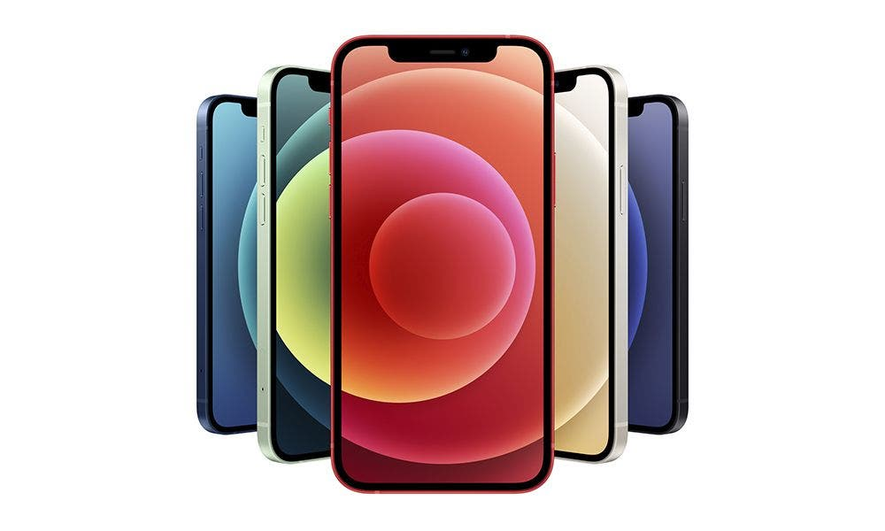
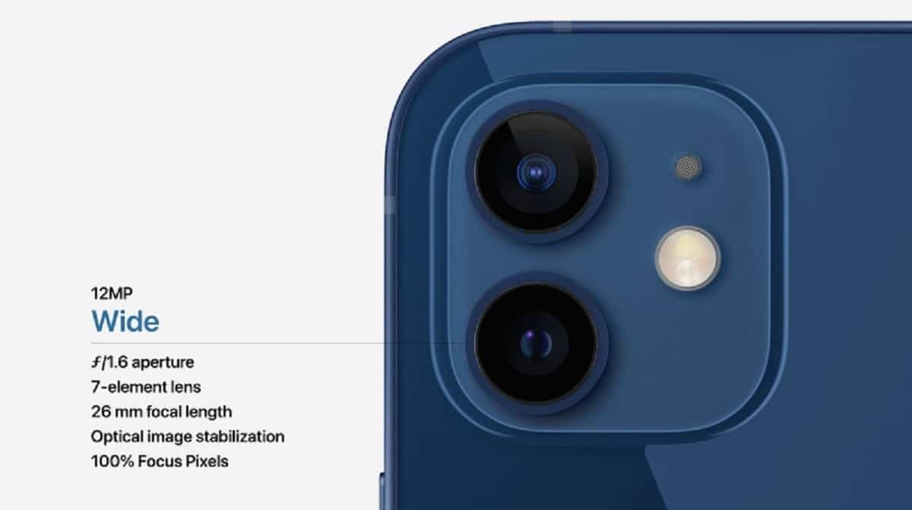

El último smartphone de Apple cambia a un diseño ligero y eficiente para dar cabida a la mejor cobertura 5G posible, el poderoso micro A14 Bionic, una extraordinaria pantalla OLED Super Retina XDR y un sistema fotográfico que disfruta, entre otros, de modo HDR inteligente y grabación de vídeo en HDR con Dolby Vision.

La cámara secundaria del iPhone 12 se basa en un sensor de 12 MP f2. 2 que nos ofrece selfies sin exagerar en detalle, algo que en mi caso prefiero, y con bastante naturalidad en la representación de colores. Admite que lo personalicemos tanto en cantidad de bokeh como en los ya clásicos efectos de iluminación.
Los 5 nanómetros llegan al corazón de los dispositivos de Apple de la mano de su nuevo procesador, el Apple A14 Bionic. Lo vimos en el iPad Air (2020) y lo vemos en todos los iPhone 12, ofreciendo en teoría un rendimiento un 16% más potente que su predecesor y dice Apple que tanto procesador como gráfica rinden un 50% más rápido que cualquier otro chip del mercado.
| |
|
|
| |
|